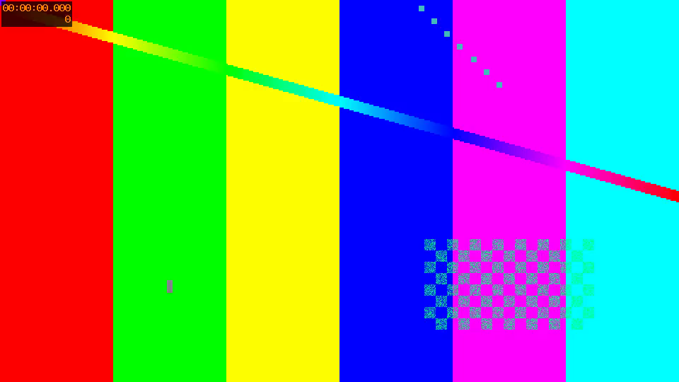

素材导入 · 合成测试片示例
用明确标记的合成测试图和动态测试片验证图片、视频、说明的导入流程。这不是 ESP 开发板演示。
测试 / 拍摄条件
运行 make-fixture.mjs，使用 FFmpeg testsrc2 生成 960×540、25 fps、10 秒测试片和一张测试图。没有连接硬件。
已知限制
素材为合成测试内容，不证明任何设备功能。导出视频为静音浏览器采样回放，不能替代逐帧剪辑；原片保留在来源文件中。
说明由作者提供；哈希用于核对字节一致性，不证明来源真实性。下载来源清单
导入图片
合成测试图，仅用于检查素材导入和排版，不是设备照片。
来源：FFmpeg testsrc2 合成测试图
打开原始image文件SHA-256: 2531ab863de6d690b1573b2c82b6facb4731d1a400bd05ef45586be037eb0f85

播放已有视频
合成动态测试片。实际使用时替换为你拍摄的设备运行视频。
来源：FFmpeg testsrc2 合成片；非现场设备拍摄
打开原始video文件SHA-256: 375a3ba0b98262d4a2347363a05d79490cbab9431fcfbca83f01a0b46d6722e9
附上说明和限制
原始素材随包保存；来源说明由作者提供，哈希不等于真实性证明。
来源：人工填写的测试素材说明
打开原始text文件SHA-256: bf5f33da3a62bb77e3282b3abe06ba9d451ec86b3a9c9cd0d3a3dcd3d60d6eca